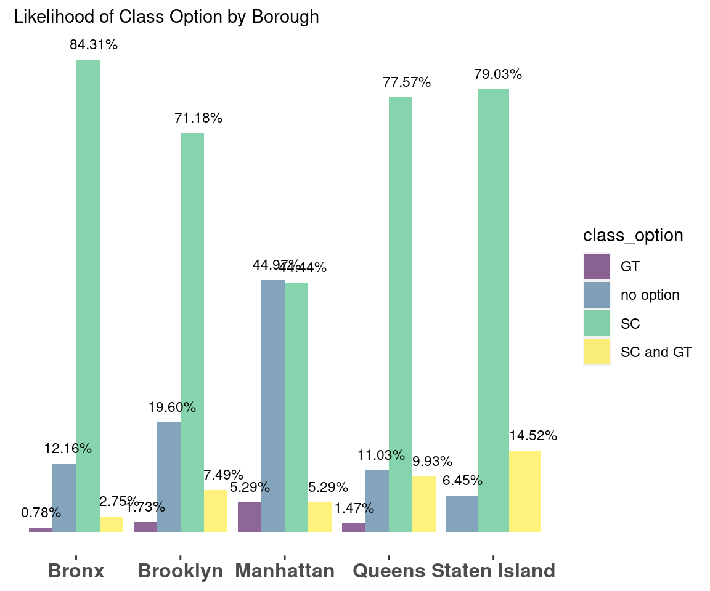
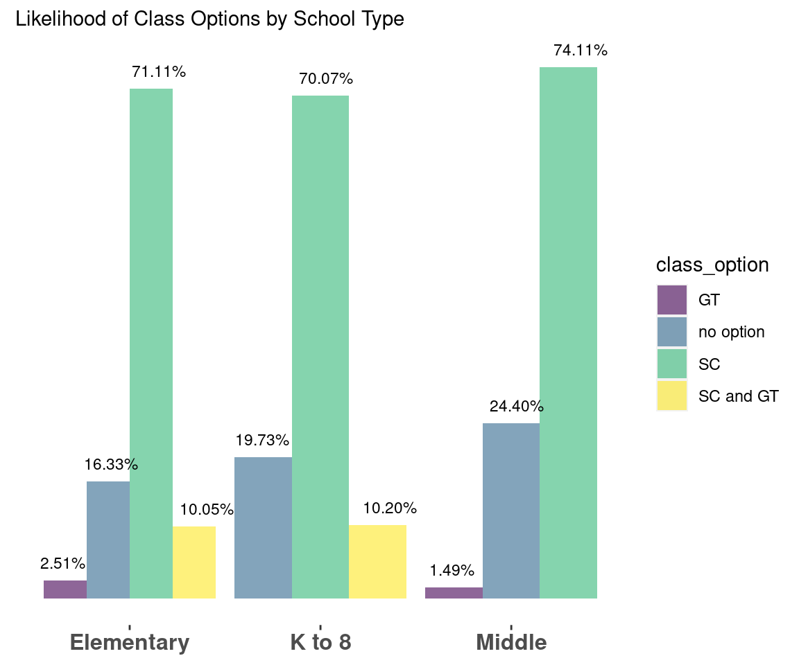
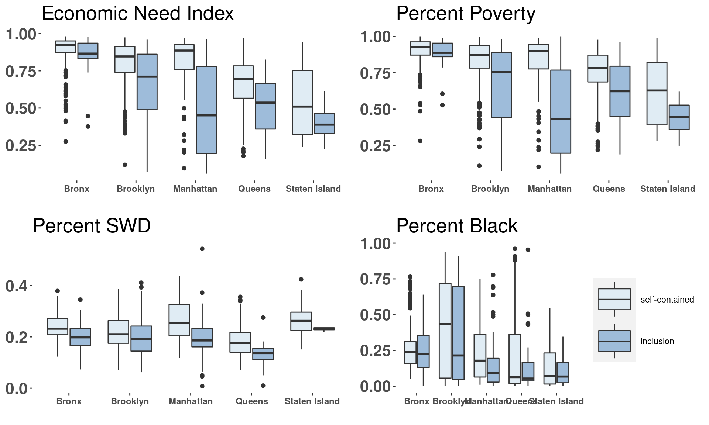
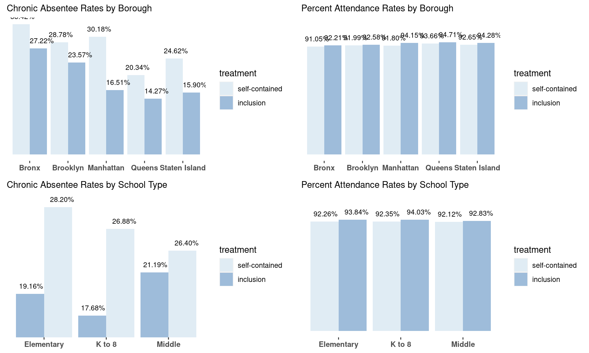
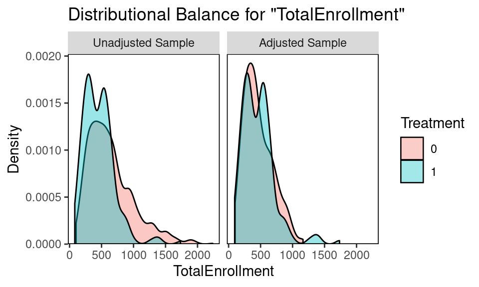
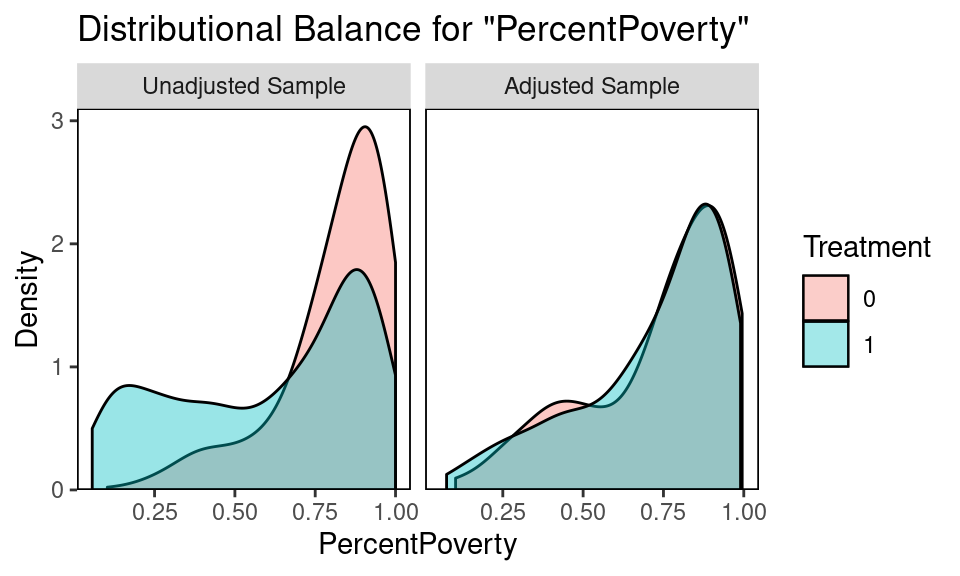
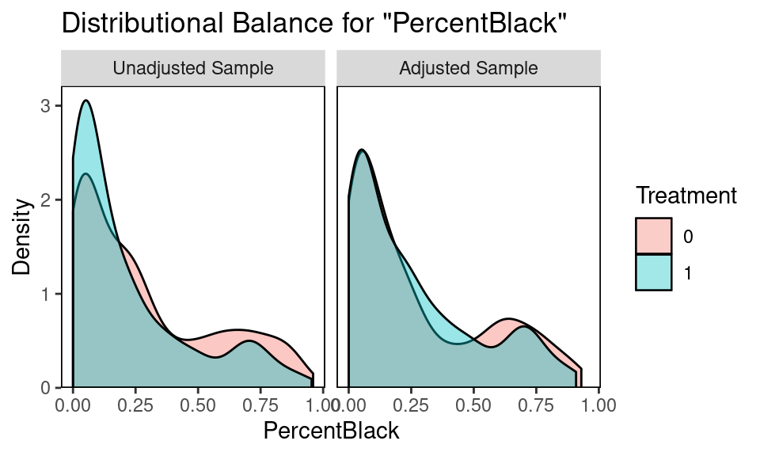
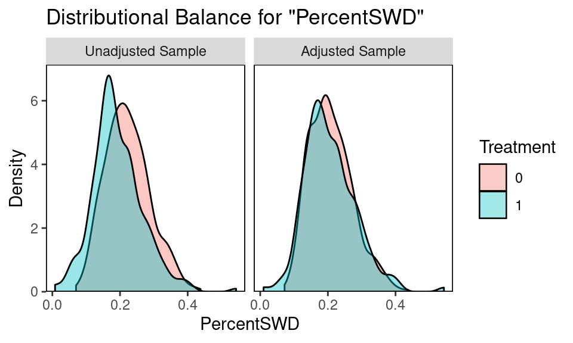
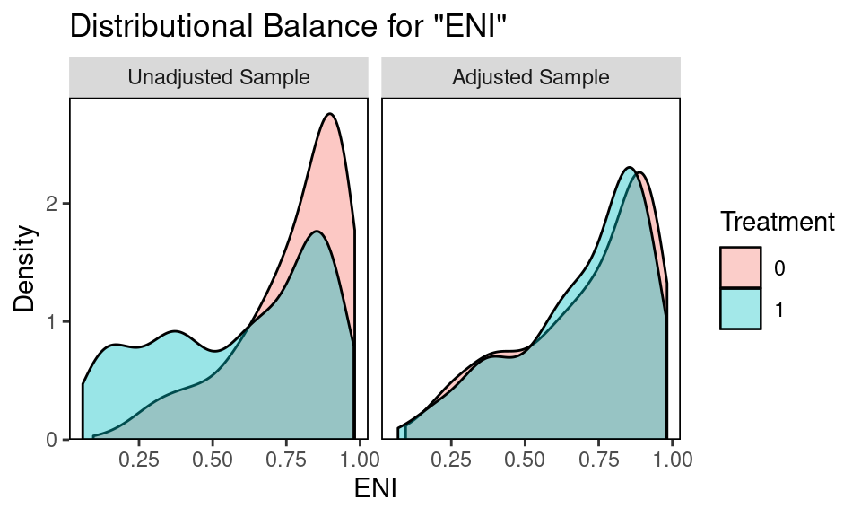

2 Research Questions
Q1: How do class options and offerings in schools vary based on socioeconomic factors of NYC public schools? Q2: What is the effect of inclusion on overall school attendance and chronic absenteeism in NYC public schools?
2.1 Question 1
2.1.1 Data Overview
Using OpenData NYC, we pull aggregate K-8 attendance records and socio-economic variables for all 1125 public schools.
| DBN | School Name | ENI | % Male | % Black | %SWD | % Poverty | |
|---|---|---|---|---|---|---|---|
| 1 | 01M015 | P.S. 015 Roberto Clemente | 190 | 0.890 | 0.479 | 0.032 | 0.258 |
| 2 | 01M019 | P.S. 019 Asher Levy | 257 | 0.679 | 0.556 | 0.062 | 0.350 |
| 3 | 01M020 | P.S. 020 Anna Silver | 497 | 0.800 | 0.509 | 0.032 | 0.237 |
2.1.2 Raw differences in Outcome and Covariates
Between treatment and control, outcome (attendance and chronic absenteeism) and socio-economic covariates are all statistically different, as assessed by a two sample t test.
| Treatment | Mean Attendance | Mean Chronic Absenteeism |
|---|---|---|
| 0 | 92.23 | 27.55 |
| 1 | 93.48 | 19.83 |
| Treatment | ENI | Percent Black | PercentSWD | Percent Poverty | Total Enrollment |
|---|---|---|---|---|---|
| 0 | 0.77 | 0.287 | 0.22 | 0.812 | 641.898 |
| 1 | 0.59 | 0.218 | 0.19 | 0.611 | 457.217 |
2.1.3 Unmatched Regression Models
Treatment (inclusion) is a significant predictor of absenteeism (CA), without matching. However, five covariates generally associated with higher absenteeism are predictive of both the treatment and the outcome, making them confounders.
\[ \begin{align} ChronicAbsenteeism = \beta_0 +\beta_1Treatment + \beta_2ENI+ \beta_3PercentBlack+\beta_4PercentSWD + \\ \beta_5PercentPoverty +\beta_6PercentPoverty+ BoroughFixedEffects + \epsilon \end{align} \]
| Predictor | B | SE | t | p |
|---|---|---|---|---|
| (Intercept) | 1.78 | 1.692 | 1.05 | 0.293 |
| treatment | -1.88 | 0.684 | -2.75 | 0.006 |
| TotalEnrollment | 0.00 | 0.001 | -3.97 | 0.000 |
| ENI | 43.59 | 3.981 | 10.95 | 0.000 |
| PercentBlack | 16.62 | 1.068 | 15.56 | 0.000 |
| PercentSWD | 36.88 | 4.501 | 8.19 | 0.000 |
| PercentPoverty | -20.36 | 3.960 | -5.14 | 0.000 |
| factor(borough)Brooklyn | -3.76 | 0.683 | -5.51 | 0.000 |
| factor(borough)Manhattan | -2.58 | 0.831 | -3.10 | 0.002 |
| factor(borough)Queens | -2.62 | 0.788 | -3.33 | 0.001 |
| factor(borough)Staten Island | 1.22 | 1.248 | 0.98 | 0.330 |
\[ \begin{align} Treatment = \beta_0 +\beta_1TotalEnrollment + \beta_2ENI+ \beta_3PercentBlack+\beta_4PercentSWD + \\ \beta_5PercentPoverty + BoroughFixedEffects + \epsilon \end{align} \]
| Predictor | B | SE | t | p |
|---|---|---|---|---|
| (Intercept) | 1.19 | 0.065 | 18.27 | 0.000 |
| TotalEnrollment | 0.00 | 0.000 | -10.35 | 0.000 |
| ENI | 0.08 | 0.174 | 0.44 | 0.663 |
| PercentBlack | -0.08 | 0.047 | -1.79 | 0.074 |
| PercentSWD | -1.21 | 0.194 | -6.27 | 0.000 |
| PercentPoverty | -0.68 | 0.172 | -3.94 | 0.000 |
| factor(borough)Brooklyn | 0.01 | 0.030 | 0.44 | 0.663 |
| factor(borough)Manhattan | 0.17 | 0.036 | 4.73 | 0.000 |
| factor(borough)Queens | -0.11 | 0.034 | -3.23 | 0.001 |
| factor(borough)Staten Island | -0.17 | 0.054 | -3.10 | 0.002 |
2.1.4 Visualizing Inclusion in NYC


2.2 Question 2
2.2.1 Borough as Match Model
We match at a ratio of 3:1, control:treatment groups. The original sample has 885 Control (no inclusion) schools and 240 Treatment (inclusion) schools. The matched sample has 418 Control and 181 Treatment. All covariates cross the acceptable standardized mean difference threshold, and visual diagnostics of the covariate distributions confirm the balance improvement.
2.2.1.1 Balance Diagnostics
#> Call
#> matchit(formula = treatment ~ PercentBlack + PercentSWD + PercentPoverty +
#> TotalEnrollment + ENI + borough, data = merged, method = "nearest",
#> caliper = 0.25, ratio = 3, family = binomial())
#>
#> Balance Measures
#> Type Diff.Adj M.Threshold
#> distance Distance 0.0705 Balanced, <0.1
#> PercentBlack Contin. -0.0823 Balanced, <0.1
#> PercentSWD Contin. -0.0316 Balanced, <0.1
#> PercentPoverty Contin. -0.0453 Balanced, <0.1
#> TotalEnrollment Contin. -0.0044 Balanced, <0.1
#> ENI Contin. -0.0264 Balanced, <0.1
#> borough_Bronx Binary 0.0056 Balanced, <0.1
#> borough_Brooklyn Binary -0.0009 Balanced, <0.1
#> borough_Manhattan Binary 0.0056 Balanced, <0.1
#> borough_Queens Binary -0.0158 Balanced, <0.1
#> borough_Staten Island Binary 0.0056 Balanced, <0.1
#>
#> Balance tally for mean differences
#> count
#> Balanced, <0.1 11
#> Not Balanced, >0.1 0
#>
#> Variable with the greatest mean difference
#> Variable Diff.Adj M.Threshold
#> PercentBlack -0.0823 Balanced, <0.1
#>
#> Sample sizes
#> Control Treated
#> All 885. 240
#> Matched (ESS) 291.72 179
#> Matched (Unweighted) 374. 179
#> Unmatched 511. 61
2.2.1.2 Outcome Model
\[ \begin{align} ChronicAbsenteeism = \beta_0 +\beta_1Treatment + BoroughFixedEffects + \epsilon \end{align} \]
| Predictor | B | SE | t | p |
|---|---|---|---|---|
| (Intercept) | 31.49 | 0.818 | 38.49 | 0.000 |
| treatment | -2.47 | 0.718 | -3.44 | 0.001 |
| boroughBrooklyn | -1.58 | 0.970 | -1.63 | 0.103 |
| boroughManhattan | -7.13 | 1.131 | -6.31 | 0.000 |
| boroughQueens | -11.59 | 1.041 | -11.13 | 0.000 |
| boroughStaten Island | -8.12 | 1.988 | -4.09 | 0.000 |
2.2.2 Within Borough Matching Model
2.2.2.1 Balance Diagnostics
Not shown here, but balance achieved for 4/5 boroughs. We can discuss the balance diagnostics of within borough in the writeup. N for Staten Island is too small for within borough matching.
2.2.2.2 Matched Estimates
\[ \begin{align} ChronicAbsenteeism = \beta_0 +\beta_1Treatment + \epsilon \end{align} \]
2.2.2.3 Outcome Model: Manhattan
| Predictor | B | SE | t | p |
|---|---|---|---|---|
| (Intercept) | 25.08 | 1.423 | 17.63 | 0.000 |
| treatment | -4.34 | 2.003 | -2.17 | 0.031 |
2.2.2.4 Outcome Model: Bronx
| Predictor | B | SE | t | p |
|---|---|---|---|---|
| (Intercept) | 33.07 | 0.806 | 41.02 | 0 |
| treatment | -6.11 | 1.118 | -5.47 | 0 |
2.2.2.5 Outcome Model: Brooklyn
| Predictor | B | SE | t | p |
|---|---|---|---|---|
| (Intercept) | 28.05 | 1.027 | 27.32 | 0.000 |
| treatment | -0.65 | 1.472 | -0.44 | 0.657 |
2.2.2.6 Outcome Model: Queens
| Predictor | B | SE | t | p |
|---|---|---|---|---|
| (Intercept) | 20.19 | 0.832 | 24.28 | 0.000 |
| treatment | -0.99 | 1.174 | -0.84 | 0.399 |